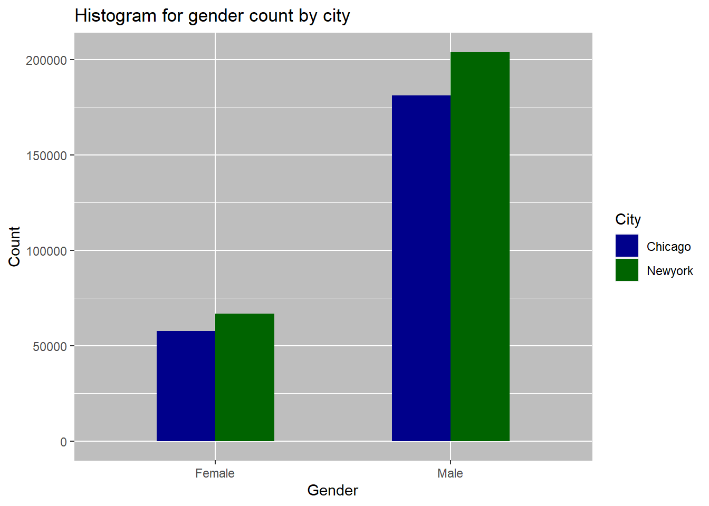
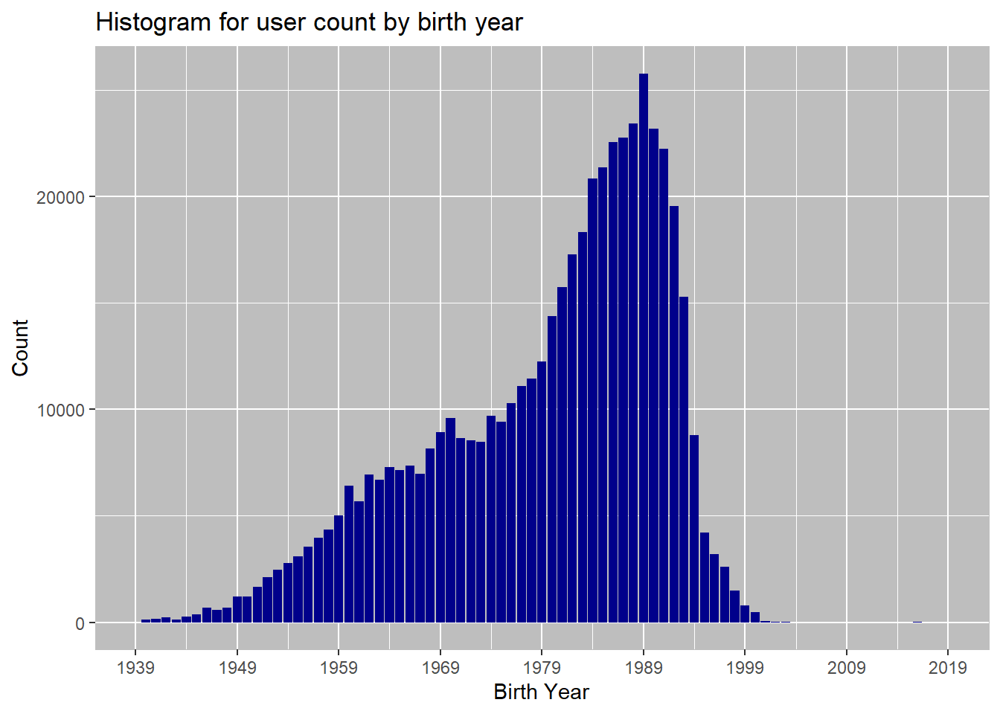

This project was completed as a part of the udacity data science with R nano degree program. The project goal was to formulate and answer some questions using the bikeshare data from three US cities.
What is the total travel time for users in different cities? What is the average travel time for users in different cities?
I used the same data table (dt) created in question 1 step a. The below code generates a summary table, a plot for total travel time by city and a plot for average travel time by city in minutes. Note: I could have used the available trip.duration column for this analysis, instead of calculating the duration (start time - end time). This helped me learn more, and output is in minutes opposed to Trip.Duration column which shows the time recorded in seconds.
ch <- fread("Data/chicago.csv", select = c(2,3,4)) # read csv as data table
ch[,"City":="Chicago"]
ny <- fread('Data/new-york-city.csv', select = c(2,3,4))
ny[,"City":= "Newyork"]
wa <- fread('Data/washington.csv', select = c(2,3,4))
wa[,"City":= "Washington"]
dt <- rbind(ch,ny,wa) #combine data tables
names(dt) <- str_replace_all(names(dt), c(" "=".")) #replace empty space in column name with a .
strt <- as.POSIXct(dt$Start.Time) #POSIX for timestamps as calendar times
dt[, "start.month" := strftime(strt, "%b")] #extracting month from timestamp and storing in a new column start.month
dt[, "start.DOW" := strftime(strt, "%a")] #extracting day of week from timestamp and storing in a new column start.DOW
dt[, "start.hourofday" := strftime(strt, "%H")] #extracting hour of day from timestamp and storing in a new column start.hourofday
t1 <- strptime(dt$Start.Time, "%Y-%m-%d %H:%M:%OS") # t1 is date time object containig start time
t2<- strptime(dt$End.Time, "%Y-%m-%d %H:%M:%OS") #t2 is date time object containing end time
dt[, "Duration" := as.numeric(t2-t1)] # creating a new column 'duration' which is difference between start and end times in mins
summary.trip.duration <- dt [, .(Avg.time.min = mean(Duration), #generating summary table by city
total.time.min = sum(Duration),
Count = .N),
by=City
][ order(-total.time.min) ]
print(summary.trip.duration)## City Avg.time.min total.time.min Count
## 1: Chicago 15.60399 4681196 300000
## 2: Newyork 15.00305 4500916 300000
## 3: Washington 12.41812 3725437 300000library(ggplot2)
plt3<- ggplot(data = summary.trip.duration, aes(x=City, y=total.time.min)) + #generating plot for total time
geom_bar(stat = "identity", fill="darkblue")+
ggtitle(paste0('Histogram for total tavel time'))+
scale_y_continuous(labels = function(x) format(x, scientific = FALSE))+
th1+labs(y = 'total travel time in minutes')
print(plt3)plt4 <- ggplot(data = summary.trip.duration, aes(x=City, y=Avg.time.min)) + #generating plot for average time
geom_bar(stat = "identity", fill = "darkblue")+
ggtitle(paste0('Histogram for average tavel time in minutes'))+
scale_y_continuous(labels = function(x) format(x, scientific = FALSE))+
th1+labs(y = 'Average travel time in minutes')
print(plt4)Average travel time is shortest for Washington at 12.41 min and longest for Chicago at 15.60 min. Total travel time is highest for chicago at > 4.6 million minutes, closely folowed by NY at ~4.5 million minutes. Washington shows lowest system utilization for all three cities at ~3.7million minutes usage for the 6 month period.
What are the counts of each user type? What are the counts of each gender (only available for NYC and Chicago)? What are the earliest, most recent, most common year of birth (only available for NYC and Chicago)?
Counts for each user type, counts for each gender overall, and counts for each gender broken down by city. Again used the data.table library functions for creating summaries and ggplot for visualizations.
ch2 <- fread('Data/chicago.csv', select=c(7,8,9))
ch2[,"City":= "Chicago"]
ny2 <- fread('Data/new-york-city.csv', select = c(7,8,9))
ny2[,"City":= "Newyork"]
wa2 <- fread('Data/washington.csv', select = c(7))
wa2[,"City":= "Washington"]
dt2<- rbind(ch2,ny2,wa2, fill = TRUE)
names(dt2) <- str_replace_all(names(dt2), c(" "=".")) #replace empty space in column name with a .
count.user.type <- dt2[User.Type !=""][,.(Count = .N), by =User.Type][order(-Count)]
print("-------Counts of each user type---------")## [1] "-------Counts of each user type---------"print(count.user.type)## User.Type Count
## 1: Subscriber 728824
## 2: Customer 170483
## 3: Dependent 1gs <- dt2[Gender!=""& !is.na(Gender)][,.(Count=.N), by=Gender]
gs.bycity<- dt2[Gender!=""& !is.na(Gender)][,.(Count=.N), by=.(Gender,City)]
print("-------counts of each gender---------")## [1] "-------counts of each gender---------"print(gs)## Gender Count
## 1: Male 385198
## 2: Female 124541print("-------counts of each gender by city---------")## [1] "-------counts of each gender by city---------"print(gs.bycity)## Gender City Count
## 1: Male Chicago 181190
## 2: Female Chicago 57758
## 3: Male Newyork 204008
## 4: Female Newyork 66783plt5 <-ggplot(data=gs.bycity, aes(x = Gender, y= Count, fill = City)) +
geom_bar(stat="identity", width=.5, position = "dodge")+
scale_y_continuous(labels = function(x) format(x, scientific = FALSE))+
th1+ scale_fill_manual(values = c.palette)+
ggtitle('Histogram for gender count by city')+
labs(x = 'Gender', y = 'Count')
print(plt5)
The most common user type is subscriber. More male users overall than female. When looking at comparison by city, both cities individually have more male users.
Earliest, most recent and most common year of birth calculation:
#order data table by birth year ascending - get most recent year
r.yr <- dt2[Birth.Year!=""& !is.na(Birth.Year)][,(max(Birth.Year))]
print(paste0("The most recent birth year is ",r.yr))## [1] "The most recent birth year is 2016"#order data table by birth year descending - get earliest year
e.yr <- dt2[Birth.Year!=""& !is.na(Birth.Year)][,(min(Birth.Year))]
print(paste0("The earliest birth year is ",e.yr))## [1] "The earliest birth year is 1885"#count number of occurences of each birht year, and order by count descending to get the most common year on top.
c.yr <- dt2[Birth.Year!=""& !is.na(Birth.Year)][,.(Count=.N), by=Birth.Year][order(-Count)]
head(c.yr,3)## Birth.Year Count
## 1: 1989 25792
## 2: 1988 23440
## 3: 1990 23187plt6 <-ggplot(data=c.yr, aes(x = Birth.Year, y= Count)) +
geom_bar(stat="identity", fill = 'darkblue')+
scale_x_continuous(limits = c(1939, 2019), breaks = seq(1939, 2019, 10))+
scale_y_continuous(labels = function(x) format(x, scientific = FALSE))+
th1+
ggtitle('Histogram for user count by birth year')+
labs(x = 'Birth Year', y = 'Count')
print(plt6)
The most recent birth year for users is 2016, the earliest birth year is 1885 (which may indicate that some users use the default option) and most common year is 1989.
Thats it. Thanks for reading!